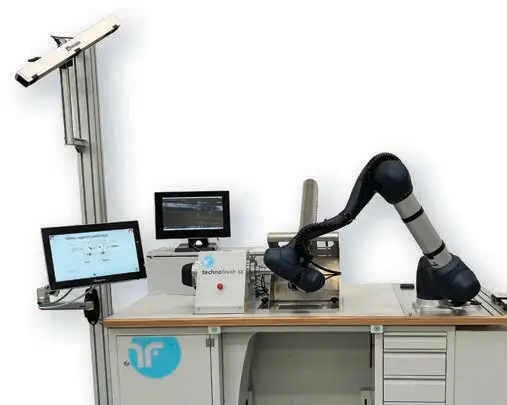
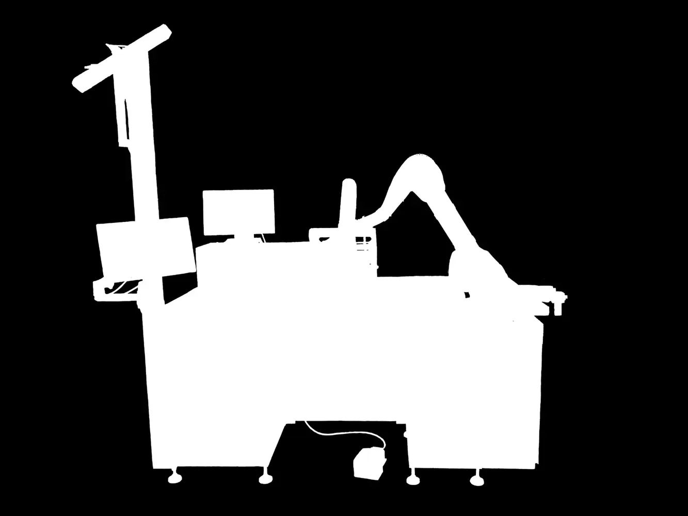
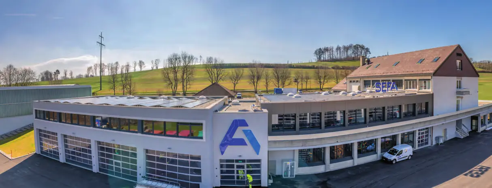
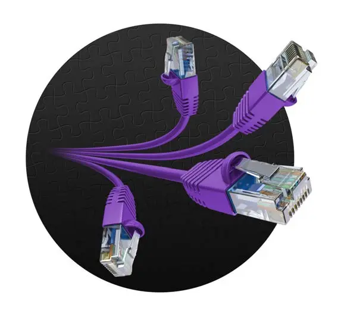
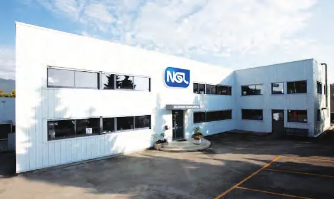
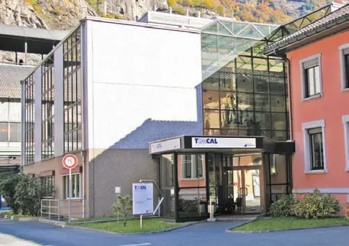
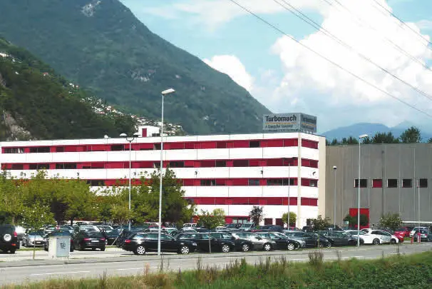
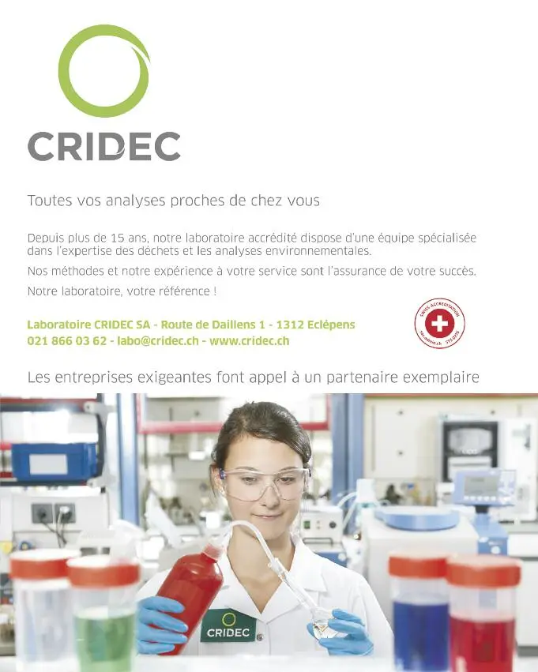
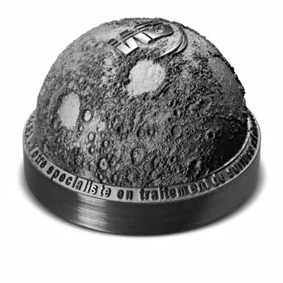

Grands travaux · 2026

147 entreprises · 161 articles · 10 magazines
 Publireportage
PublireportageSerrages de haute précision au métal dur à Court
 Publireportage
PublireportageProduction indépendante de verres saphir à Bassecourt
PublireportageProduction de saphir 100 % suisse à faible impact carbone
 Publireportage
PublireportagePlateaux de conditionnement en copeaux de bois et résine
 Publireportage
PublireportageEntreprise générale du bâtiment et du génie civil
Produits biosourcés, procédés décarbonés et circuits courts
Radon, substances nocives, sites contaminés et énergie
Des généralistes de l’environnement sur les chantiers romands
L’environnement dans les projets ferroviaires
Recyclage, ciment vert et proximité
Le pari de l’argile calcinée
Géotechnique, hydrogéologie et polluants
 Publireportage
PublireportageDurabilité et sécurité d'approvisionnement à Delémont

PublireportagePlateaux de conditionnement en copeaux de bois et résine
 Publireportage
PublireportagePublireportage (résumé allemand inclus)
Association pour l'assurance qualité des fabricants de bracelets cuir (AQC)
Serrages de haute précision au métal dur à Court

PublireportagePlateaux de conditionnement en copeaux de bois et résine
Récupération des métaux précieux
 Publireportage
PublireportageUsinage et anodisation de l’aluminium désormais à Cressier
 Publireportage
PublireportageLes décolleteuses MTF et une girolle plus verte
 Publireportage
PublireportagePolissage, brosses techniques et conditionnement, désormais aussi biodégradable
Entreprise lauréate du Prix Raiffeisen des Entrepreneurs
 Publireportage
PublireportageInjection plastique pour l’horlogerie et matériaux bio-sourcés au Locle
Électroplastie et décoration horlogère à La Chaux-de-Fonds
Interview de Gudrun Russig, responsable de l'environnement au sein du comité de direction, municipale à Signy-Avenex

PublireportageDécoration et traitements de composants horlogers haut de gamme à Saint-Imier
 Interview
InterviewInterview mit Gianni Operto, Präsident AEE Suisse
 Interview
InterviewInterview de Monsieur Andréas von Kaenel, Directeur AEE Suisse romande
 Interview
InterviewInterview mit Ständerat Dr. Beat Vonlanthen
Interview de Monsieur Jérôme Christen
 Interview
InterviewInterview de Konrad Rieder, Directeur des Affaires régulatoires des SIG
 Interview
InterviewInterview de Monsieur Francis Rossier, président Energies Nouvelles Valais
Interview de Monsieur Michel Herzen, Président des énergies nouvelles de Vaud
 Interview
InterviewInterview de Monsieur Laurent Balsiger, Directeur de l’énergie du Canton de Vaud
Interview de Monsieur Patrick Chiché, vice-président d’Energies Nouvelles Vaud
Interview de Monsieur Christophe Ballif, Prof. EPFL, directeur du PV-Lab et du PV-center au CSEM
Interview de Monsieur François Vuille, Directeur du Centre de l’énergie (CEN) de l’EPFL
 Interview
InterviewInterview de Monsieur Gaëtan Chérix, directeur de la Haute Ecole d’Ingénierie du Valais
Interview de Monsieur Massimiliano Capezzali, Professeur à la Haute Ecole d’Ingénierie
Interview de Monsieur Joël Fournier, Chef du service de l’énergie et des forces hydrauliques du Valais
 Interview
InterviewInterview de Monsieur Laurent Caillère, président d’Energies Nouvelles Fribourg
Interview de Monsieur Serge Boschung, chef du Service de l’énergie Fribourg
Interview mit Roberto Schmidt, Staatsrat, Chef des Departements für Finanzen und Energie
 Interview
InterviewInterview mit Dr. Hanspeter Hilfiker, Stadtpräsident
Interview mit Regierungsrat Christoph Brutschin, Vorsteher Departement für Wirtschaft, Soziales und Umwelt
PublireportageInterview de Martial Wicht, Syndic de Neyruz
 Publireportage
PublireportagePublireportage
 Publireportage
PublireportageIntelligentes Elektrizitätsmanagement (français et allemand)
 Publireportage
PublireportageContrôle indépendant des installations électriques
 Publireportage
PublireportagePublireportage
 Interview
InterviewInterview de M. Jean-Pascal Gendre, CEO
 Publireportage
PublireportagePublireportage
 Interview
InterviewInterview de Jérôme Duval, sous-directeur
PublireportagePublireportage
 Publireportage
PublireportagePublireportage
 Publireportage
PublireportagePublireportage
Publireportage
Entretien avec M. René Bautz, directeur général
 Publireportage
PublireportageSchlüsselfertige „smarte“ Lösungen (français et allemand)
PublireportagePublireportage
 Publireportage
PublireportagePublireportage

InterviewEntretien avec François Wüthrich, Directeur (français et allemand)
Interview de la conseillère d’État vaudoise Jacqueline de Quattro
 Publireportage
PublireportageCompany profile
 Publireportage
PublireportageCompany profile (publié dans les dossiers Vaud et Fribourg)
Company profile
 Publireportage
PublireportageCompany profile
Company profile
Interview mit Angelo Cioppi – Co-Vorsteher des Amts für Grundstücke und Gebäude / Kantonsbaumeister
Im Gespräch mit Stefan Oswald, Leiter Marktgebiet West
Interview mit Reto Wagner, Dipl. Geologe, Vorsitzender der Geschäftsleitung
 Interview
InterviewIm Gespräch mit Unternehmensleiter Bruno Müller
Company profile
Spezialistin im Bereich Erdwärme (français et allemand)
Company profile
Interview de Laurent Favre, conseiller d’État neuchâtelois
Company profile
Company profile – Ticino
 Publireportage
PublireportageNGL Academy et Afterworks pour les 40 ans de l'entreprise
 Publireportage
PublireportageAlpha Wassertechnik AG

PublireportageProduits de nettoyage industriel à base aqueuse
 Publireportage
PublireportageRécupération, fonderie et analyse de métaux précieux au Tessin
Entretien avec M. Pierre-Antoine Hildbrand, municipal en charge de l'Economie et de la Sécurité
Entretien avec M. Jean-Yves Pidoux, municipal en charge des Services industriels
Interview mit Alexander Streitzig, Vorsitzender der Geschäftsleitung
 Publireportage
PublireportageBG Consulting Engineers – Building a sustainable living environment
Enhancing the status of the power network electrician
Savoir-faire, proximité et éthique environnementale
For reliable and efficient electrical inspections
Im Gespräch mit Geschäftsführer Yvan Grepper / Entretien avec Yvan Grepper, PDG
 Publireportage
PublireportageYour engineering partner in French-speaking Switzerland
 Publireportage
PublireportagePublireportage
 Publireportage
PublireportagePublireportage
 Publireportage
PublireportageEnergy – the challenge of the future (français et anglais)
 Publireportage
PublireportageUne lecture détaillée du sous-sol pour les grands chantiers romands
 Publireportage
PublireportageStatique, hydraulique, acoustique et trafic
Plus de 2000 projets environnementaux en Romandie
 Publireportage
PublireportageRevêtements routiers, étanchéité et génie civil à Lugano
 Interview
InterviewExtensive geognostic characterisation for all types of terrain
 Interview
InterviewInterview de Christian Meixenberger, président du Cluster IT Valley
 Publireportage
PublireportageEnvironnement, construction et énergie
 Publireportage
PublireportageInterview de Pascal Barras, directeur général (version allemande incluse)
 Publireportage
Publireportage« Partageons plus que l'énergie » – Dominique Gachoud, directeur général (version allemande incluse)
 Publireportage
PublireportageGestion technique du bâtiment à Matran
 Publireportage
PublireportageSurveillance des machines tournantes
Interview de Barbara Schwickert, directrice des travaux publics, de l'énergie et de l'environnement de la Ville de Bienne
 Publireportage
PublireportageInterview mit Rolf Meyer, Leiter Unternehmenskommunikation (version anglaise incluse)
 Interview
InterviewInterview de Philippe Maag, chef de projet Vergers à la Ville de Meyrin
 Publireportage
Publireportage Publireportage
Publireportage Publireportage
Publireportage Publireportage
Publireportage« Au cœur de vos envies »
 Interview
InterviewInterview de Jean-Jacques Aubert, municipal en charge des infrastructures, des énergies et des espaces publics
 Interview
InterviewInterview de Thierry Genoud, municipal en charge des bâtiments et de l'urbanisme
Entretien avec Olivier Mayor, conseiller municipal en charge de la culture, des travaux et de l'environnement
 Interview
InterviewInterview de Claude Moinat, municipal (eaux et épuration, services industriels, routes, finances)
Entretien avec M. Claude Dupertuis, conseiller municipal en charge des espaces verts, forêts et services industriels
InterviewInterview de Bernard Ebener, municipal (parcs, environnement et développement durable, informatique, sport, forêts, défense incendie)
InterviewInterview d'Olivier Fargeon, municipal en charge des équipements, espaces verts et gestion des déchets
 Publireportage
PublireportageRegio Energie Solothurn
60 ans et pionnier de l'« urban mining » (version anglaise incluse)
 Interview
InterviewÉlectrofiltres et épuration des fumées
 Interview
InterviewLe fournisseur d'énergie et d'eau d'Aarau (version anglaise incluse)
 Interview
InterviewEnvironnement, sécurité et conformité légale (version française incluse)
Interview« Energieservice public – so nah, so gut »
 Publireportage
PublireportageMazout, carburants et 30 stations-service
 Publireportage
PublireportageChauffage, ventilation, climatisation – partenaire de Minergie
 Publireportage
PublireportageÉlectricité, eau, chauffage, TV numérique, Internet et téléphone – Patrick Pralong, directeur
 Dossier
DossierUne politique cohérente à long terme – René Quiros
Interview de Mario Rossi, conseiller municipal de Sierre en charge de l'environnement, de l'eau et de l'énergie
 Publireportage
PublireportageMonitoring des réseaux d'eau potable
Entretien avec Dominique Gachoud, directeur général
 Interview
InterviewInterview de Monsieur Pierre Brulhart, conseiller communal à Delémont (directeur du Département de l'énergie et des eaux)
 Interview
InterviewInterview de Mme Anne Girardet, Chargée de mission transfrontalière pour le Pays Horloger et le Parc naturel régional du Doubs
Interview mit Hans-Jürg Gerber, Leiter Wirtschaftsraum Bern / « Une synergie exemplaire entre ruralité et urbanité »
 Publireportage
PublireportageNeroxis – Protecting the environment
 Publireportage
PublireportageInterview mit Heinz Binggeli, Direktor ESB / De l'énergie pour la ville de Bienne et la région du Seeland
 Publireportage
PublireportageEisspeicher und Solarheizsysteme von Fafco – Für Gebäudetechnik und Industrie
Geschäftsleitung: R. Brinkmann, Dr. Ch. Meyer / Geotest SA – Géologie, géotechnique, géophysique, environnement
 Publireportage
PublireportageEntretien avec M. Michel Pasche, directeur administratif
 Publireportage
PublireportageIm Gespräch mit Erich Wälti, Unternehmensleiter / Entretien avec Erich Wälti, dirigeant de Vigier Beton Seeland Jura
Im Gespräch mit VR-Präsident Heinz Eberhard
 Interview
InterviewIm Gespräch mit Peter Studer, Leiter Verkauf
Fragen an Thomas Rauscher, Geschäftsführer
 Interview
InterviewIm Gespräch mit Geschäftsführer Martin Stiefel
 Interview
InterviewIm Gespräch mit Geschäftsführerin Stina Andersen
 Interview
InterviewInterview mit Martin Bachmann, Executive Vice President der Pöyry PLC und Verwaltungsratspräsident der Pöyry Schweiz AG
 Publireportage
PublireportageInstallations techniques du bâtiment
 Publireportage
PublireportageSwiss National Supercomputing Centre (version anglaise incluse)

PublireportageDavide Cattaneo, CEO & General Manager (version anglaise incluse)

PublireportageMarc Brusseleers, direttore
 Interview
InterviewLes HUG en pionniers européens (version anglaise : The model of a "green hospital")
Injection thermoplastique de précision
Association faîtière des énergies renouvelables et de l’efficacité énergétique
Association – énergies renouvelables et efficacité énergétique
Distribution de carburants et combustibles
Bureau d’ingénieurs civils
Traitement de l'eau
Installations techniques du bâtiment
Ingénierie technique du bâtiment et consulting
Administration cantonale – immeubles et constructions
Facility management

Conformité chimique des matériaux
Association – développement durable
Bureau d'architectes
Ingénieurs et géomètres
Ingénierie des installations sanitaires et apparentées
Transports publics urbains
Ingénierie électrique et optimisation énergétique
Ingénierie et conseil
Entreprise générale de bâtiment et génie civil
Coordination de la recherche en énergie

Bureau d’architecture
Centre de formation professionnelle
Contrôle des installations électriques
Construction et entretien routiers
Usinage et traitement de surface de l’aluminium
Distribution de combustibles et carburants
Commune
Commune
Recherche appliquée en énergie urbaine

Traitement des déchets spéciaux
Centre de calcul scientifique
Conseil en ingénierie et environnement
Administration cantonale – territoire, mobilité et énergie
Administration cantonale – territoire, environnement et énergie
Administration cantonale – énergie

Cadrans monobloc par technologie laser
Bureau d’ingénieurs en électricité
Bureau d’études en environnement et paysage
Bureau d'ingénieurs en électricité
Génie civil, déconstruction, assainissement et recyclage
Récupération et traitement des métaux précieux
Conseil en environnement et santé dans le bâtiment
Bureau d’études en environnement
Contrôles et sécurité électriques
Épuration des gaz de fumée
Ingénierie, planification et conseil (infrastructures)
Ingénierie, planification et management de projets
Monitoring de la qualité de l'eau
Gestion technique et énergétique du bâtiment
Services industriels – électricité, gaz, eau, télécommunications
Association de professionnels – énergies renouvelables
Association d’entrepreneurs – énergies renouvelables
Association d’entrepreneurs – énergies renouvelables
Bureau d’études en énergie et installations techniques
Technique du bâtiment et services énergétiques
Installations électriques, télématique et automation
Recherche en photovoltaïque
Accumulateurs de glace et capteurs solaires
Distribution de gaz naturel
Approvisionnement et transport de gaz naturel
Chauffage, ventilation, climatisation et tuyauterie industrielle
Géologie, géotechnique, géophysique et environnement
Forages géothermiques et recherche d’eau
Technique de gestion des déchets et recyclage
Granulats, béton frais et recyclage
Entreprise générale de l’énergie
Lampes et luminaires
Câbles électriques, réseaux et confection de câbles
Haute école d’ingénierie
Hôpital universitaire
Fourniture d'électricité, gaz, eau et chaleur
Recherche et formation en énergie
Cluster informatique
Installations de valorisation thermique des déchets
Cimenterie (argile calcinée)
Administration cantonale – économie, social et environnement
Administration cantonale – finances et énergie
Géologie appliquée et géotechnique
Infrastructures ferroviaires, routières et énergétiques
Gestion globale du linge professionnel
Surveillance de machines tournantes

Décolleteuses CNC et usinage de précision
Centre commercial
Installations électriques, domotique et photovoltaïque

Électroplastie et décoration horlogère
Conseil et solutions de smart metering
Conseil en durabilité, environnement et sécurité
Capteurs pour la qualité de l'eau et du gaz
Société communale d’énergie renouvelable
Produits de nettoyage industriel à base aqueuse
Ventilation et pompes à chaleur
Géologie de l’ingénieur et hydrogéologie
Hôtel et centre de conférences
Parc naturel régional
Technique du bâtiment – chauffage et sanitaire
Ventilation
Pays (collectivités territoriales françaises) – projet de PNR
Géotechnique, hydrogéologie et diagnostic des polluants
Coordination de la recherche en énergie
Fabrication de brosses techniques
Géophysique et études territoriales
Ingénierie et conseil
Tampographie horlogère

Bitumes et entretien des revêtements routiers
Électricité, télématique et photovoltaïque
Fourniture d'énergie et d'eau
Association intercommunale de développement régional
Réseau intercommunal
Réseaux câblés et génie civil
Verres de montres en saphir
Production et distribution d'énergie, multimédia
Distribution d’énergie et de signaux numériques
Serrages de précision pour décolleteuses
Administration cantonale – énergie
Administration cantonale – énergie
Services industriels communaux (énergie, eaux)
Entreprise d’approvisionnement énergétique
Électricité, eau, chauffage à distance et multimédia

Électricité : distribution, production, installations et commerce
Installations solaires photovoltaïques
Installations solaires photovoltaïques
Revêtements routiers, étanchéité, bâtiment et génie civil
Ingénierie CVSE et sécurité
Commune

Administration communale
Bureau d’ingénierie (statique, hydraulique, acoustique, trafic)
Installations techniques du bâtiment et de l’industrie
Micro-injection plastique
Postes de polissage et consommables
Emballages thermoformés et injectés
Graphite et noirs de carbone
Production de saphir synthétique
Bureau d'ingénieurs civils
Groupes de production d'énergie à turbines à gaz
Béton, mortiers et granulats
Béton, granulats et recyclage de matériaux de construction
Commune
Commune
Administration communale
Commune
Commune

Administration communale
Commune
Administration communale
Commune
Promotion économique régionale
Aucun résultat.
Grands travaux · 2026


Collectivités · 2018


Économie régionale · 2015

Collectivités · 2014

Collectivités · 2014


Économie régionale · 2012